Below are photos from Fay's memorial celebration, held in Sierra Madre Memorial Park, March 24th 2016.
Fay Angus was born into a missionary family on May 25th 1929 in Brisbane, Australia. When she was age two, her family moved to China, where Fay attended a Christioan girls school. When she was 10 years old, the Japanese invaded China, and Fay was sent to an internment camp, where she remained until the conquest of the Japanese Empire. This was a very difficult time, and she almost lost faith, but pulled through by strength of character.
During her adult life, Fay married John S. Angus. They moved to Southern California, where John worked as an engineer for the City of Los Angeles. They lived in a lovely home in the hills of Sierra Madre, bringing up one son and one daughter.
During this time, Fay wrote a number of books on Christian living, and one, White Pagoda, describing the experiences of children in the Japanese internment camps. She also worked with estate sales and antiques.
Fay was very active in the Sierra Madre community, particularly working to preserve the character of the town in opposition to exploitation by developers. For this she had many friends, and a few who were not quite so friendly.
Fay was greatly valued for her perpetually cheerful politeness and generosity, as well as for her endearing British accent. She died very suddenly on February 17th 2016, of a massive stroke, and is very much missed by those who knew her well. The photo is of Fay at the 2008 Christmas party at Mary's Store in Sierra Madre.
Any additional material on Fay Angus would be welcome.
Contact Andrew Grygus
agryg@clovegarden.com
|
|
|
Below are photos from Fay's memorial celebration, held in Sierra Madre Memorial Park, March 24th 2016. Click on picture for larger view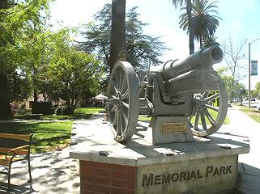 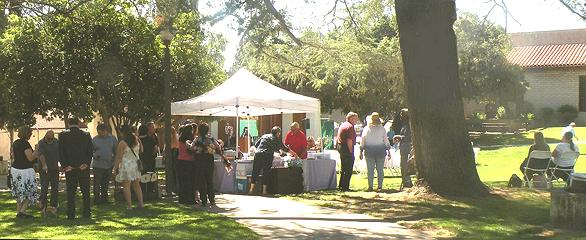 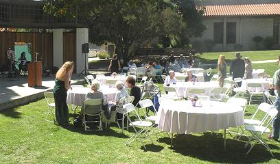 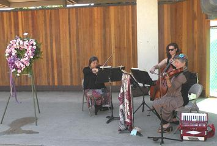 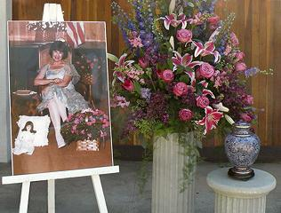 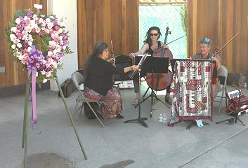 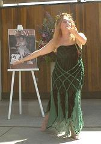 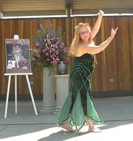 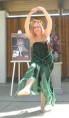 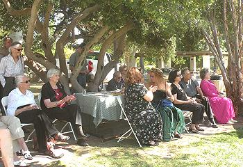 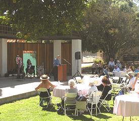 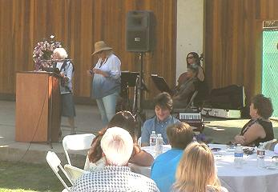 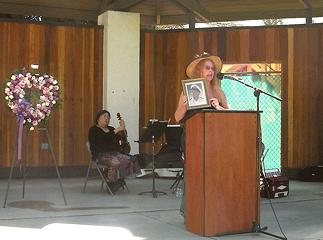 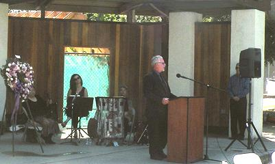 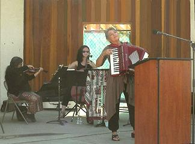 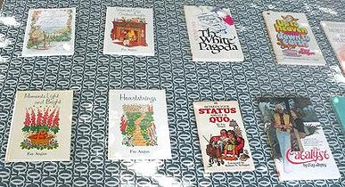 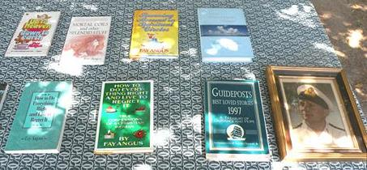 |